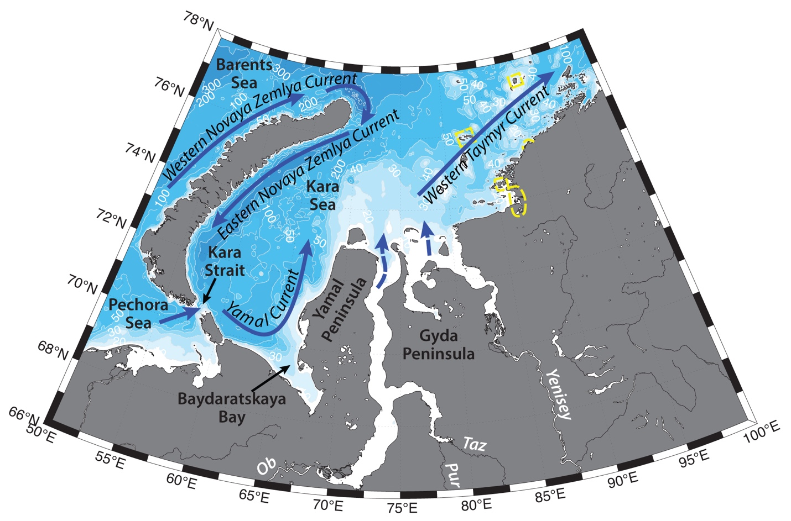

Schematic water circulation patterns and geographical place names in the Kara Sea region. Adopted from Pavlov and Pfirman (1995), Zatsepin et al. (2010). Dashed yellow line marks the studied region.
Hydrography of the region is mainly determined by fresh Ob-Yenisey plume, its temporal and spatial variability, as well as Ob-Yenisey polynya, seasonal ice cover and wind forcing.
Siberian river discharges control summer stratification and biogeochemical parameters on the Siberian shelves. Large volume of Arctic river inflow comes from Ob and Yenisey rivers (412 km3 and 599 km3 annually respectively), with most of it being discharged during ice-free season – typically June – October (e.g. Gordeev et al., 1996; Carmack, 2000; Guay et al., 2001; Williams and Carmack, 2015; Janout et al., 2015). Ob-Yenisey rivers plume occupies an area of up to 350,000 km2 in the southern part of the Kara Sea (Johnson et al., 1997) and significantly freshen surface waters of the Kara Sea – close to the estuary salinities rarely exceed 10 psu. Surface waters temperatures may reach about 13 °C during summertime (Pivovarov et al., 2003).
Surface Ob-Yenisey waters are underlaid by usually cold waters, formed via convective overturning in winter. They generally have negative temperatures and salinities from 25 to 33.5, and characterized by high nutrient concentrations and low oxygen (Pivovarov et al., 2003). A vast frontal zone forms between the plume and ambient and saltier Kara Sea waters (Pivovarov et al., 2003).
Complex mixing zones are formed within the plume. Ob and Yenisey rivers also have different discharge regime, which leads to differences in water structure and dynamics in their respective gulfs. Yenisey has the high flood in June, while Ob discharge is more stable throughout the warm season (e.g. Osadchiev et al., 2017).
Biophysical properties of the river waters change during the annual cycle (e.g. Pivovarov et al., 2003). Differences in the salinity content in the region lead to large biodiversity depending on the prevailing water mass at a certain time of the year. River waters carry nutrients, which concentration in the estuary peaks beneath the sea ice in spring (e.g. 100-150μmol/l silicate concentration in the estuary; Pivovarov et al., 2003). Water column is thoroughly mixed during cold season, with temperatures close to freezing, maximum temperatures of the water column are observed in August (Pivovarov et al., 2003).
General circulation of the Kara Sea is governed by river runoff, water exchange with the neighboring seas and strongly depends on wind forcing. Ob-Yenisey plume is usually advected in a relatively thin (10-20 m) and fresh (S<20 – 25) baroclinic eastward flow along the coast due to combined effects of the Coriolis force and large salinity gradient. The eastward spreading of this plume depends on the synoptic variability of atmospheric pressure patterns during summer periods (e.g. Janout et al., 2015; Carmack et al., 2015). Downwelling favorable winds (cyclonic circulation) in the region form a narrow quasi-geostrophic current along the Russian coast with the strong gradient with ambient marine waters. This eastward flow of river waters is also known as West Taymyr Current (e.g. Zatsepin et al., 2010; Janout et al., 2015).
Upwelling-favorable winds, in turn, hinder the eastward flow and enhance mixing. High pressure and anticyclonic circulation dominating in the central Arctic are believed to cause northward, and in some cases – westward, propagation of river plumes (e.g. Johnson et al., 1997; Dmitrenko et al., 2005a; Dmitrenko et al., 2008).
Water exchange with the Barents Sea influences the hydrography of the southwestern part of the Kara Sea. Yamal current carries modified Barents Sea (e.g. T=~3.9 °C, S = 23 – 28; Johnson et al., 1997; Pivovarov et al., 2003) water northeastwards through the Kara and Yugor straits (known in Russian as “Yugorskii Shar”) along the western slope of Yamal Peninsula (e.g. Pavlov, Pfirman, 1995; Zatsepin et al., 2010). Pavlov and Pfirman (1995) described that the current divides into several branches, one of which is joined by the river discharge and continues eastwards, joining West Taymyr Current, while the main flow turns offshore towards Novaya Zemlya, participating in a cyclonic gyre in the southwestern Kara Sea.
Recent studies (e.g. Johnson et al., 1997; McClimans et al., 2000; Zatsepin et al., 2010) also agree, that upon entering Kara Sea, Yamal current turns seawards away from the Yamal coast to the northeast and flows along the eastern coast of Novaya Zemlya up to its northern end. But they also suggest, that the freshwater runoff of the Ob and Yenisei rivers forms an anticyclonic gyre near the mouths of the rivers and north of them with intensification of the northeastern transport at its western periphery; part of the waters of this gyre merges with the northeasterly current along the coast of Novaya Zemlya. Despite this, the precise current pathways and variability of the circulation and hydrology of the Kara Sea still need more investigation (e.g. Zatsepin et al., 2010). Currents also strongly depend on the freshwater runoff and the water exchange through the straits with the neighboring seas and the Arctic Ocean, and wind forcing is one of the most important factors influencing the circulation of the shallow Arctic shelf seas (e.g. Zatsepin et al., 2010; Harms and Karcher, 1999).
During wintertime land-fast ice forms along the coast and surrounds the islands on the shelf. Summertime warm freshwater discharge accelerates breaking of the land fast ice and transports it offshore. Ice used to stay in the region for more than half a year (approximately from November to June), however in recent years of warming Arctic that might not be the case anymore (e.g. Nghiem et al., 2006; Kwok et al., 2009; Janout et al., 2015). The remaining ice is largely affected by the wind patterns – moving in the wind direction, except for the land-fast ice (Morris et al., 1999; Holt and Martin, 2001). Melting of the sea ice forms Arctic Surface Water mass, with salinities from 28 to 32 (Pivovarov et al., 2003).
Under the influence of southerly and southwesterly winds drift ice can get pushed offshore from the Kara coast and Ob-Yenisey Flaw Polynya can form to the west of Gyda Peninsula in the near shore area between stationary land fast ice and moving ice fields (Bardan, Korneeva, 2004). While compared to the vast Great Siberian Polynya in the Laptev Sea, largest polynyas in the Kara Sea are mainly concentrated north of Severnaya Zemlya and along the Novaya Zemlya coast, Ob-Yenisey Polynya is considered a stable object, as its mean annual recurrence is greater than 60%. It is part of the system of stationary polynyas in the Kara Sea, known as North-East Passage, which also include Yamal Polynya, Tsentralnaya Karskaya, Severno-Novozemelskaya, and Zapadno-Novozemelskaya Polynyas, as well as Vostochno-Novozemelskaya and Amderminskaya (Bardan, Korneeva, 2004). Flaw polynyas in the Kara Sea more often form in the beginning of winter, due to higher mobility of the ice.
Tides and wind-driven rising of the sea-level influence water structure in the region as well. Main tides in the southern part of the Kara Sea are semidiurnal lunar tides, with amplitude about 0.2–0.5 m. Tidal currents do not exceed 0.2 m/s; therefore, tidal mixing has limited influence on the Ob-Yenisei river plume (e.g. Kagan et al., 2010).